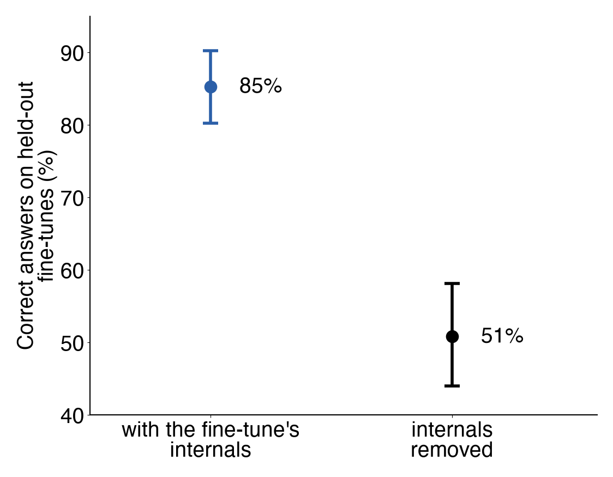
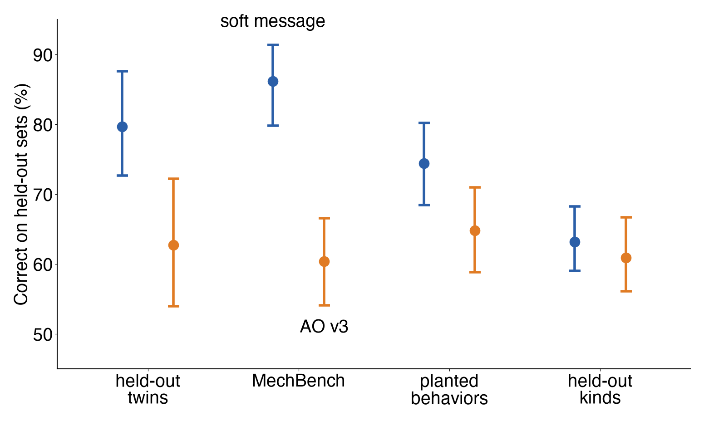
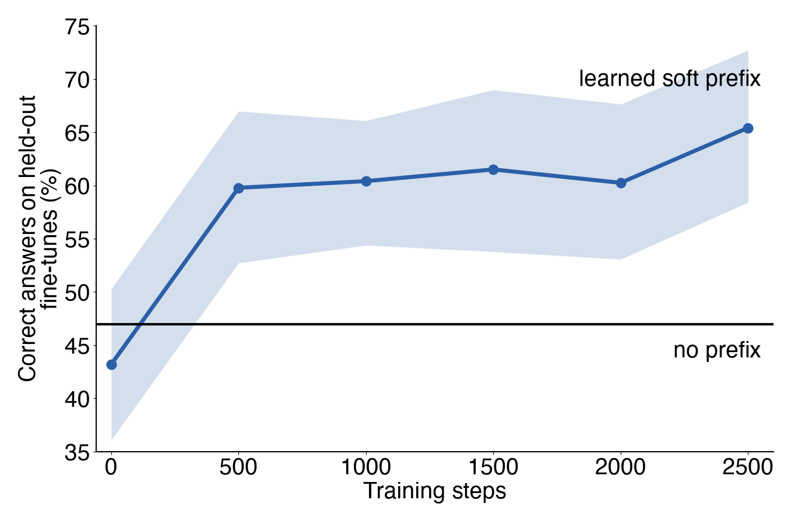
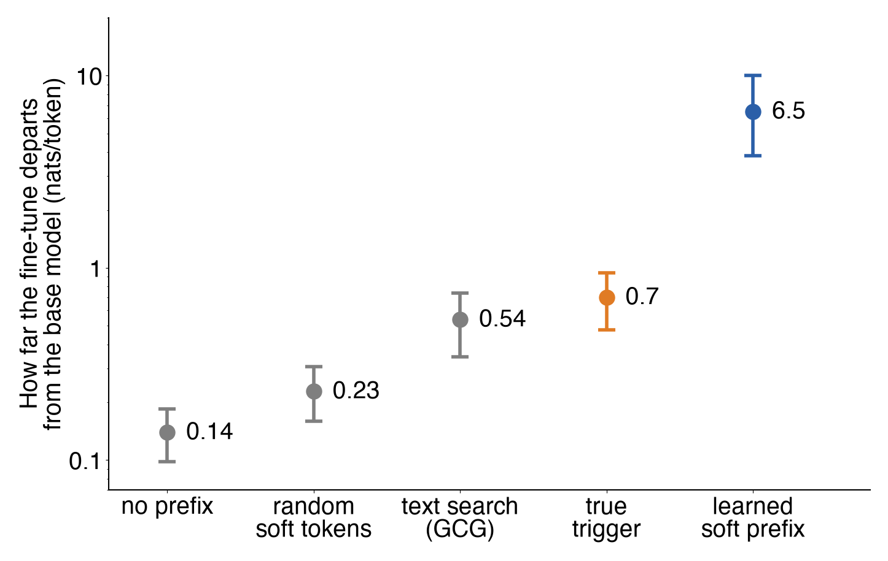
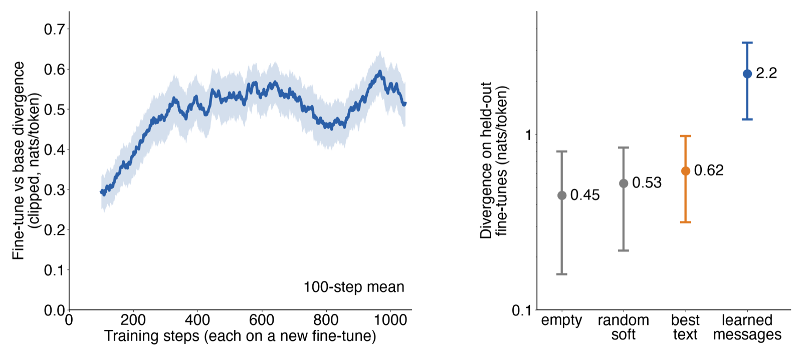

Soft-Token Probes: A Learned Message Makes a Fine-Tune Show What Changed
TL;DR
We train a writer to send a learned message of soft tokens to a fine-tuned Qwen3-8B; an oracle reads the fine-tune's reply and answers questions about what the fine-tune changed. On held-out fine-tunes, it answers 85% of questions, against 79% when the same trained system sends an empty message and 71% when it answers before any exchange. A writer that cannot see the fine-tune (a test-time ablation of the same system) does as well, 86%: the message works without the writer reading the fine-tune. After 150 training steps, the soft-message oracle beats a published activation oracle (AO v3, a separately trained system) on held-out twins (80% vs 63%) and MechBench (86% vs 60%). Trained with no labels, only to make a fine-tune differ from its base model, a soft prefix makes backdoored fine-tunes depart from the base about 9 times more than their true trigger does (measured as divergence, not yet as judged behavior).
Introduction
Auditing a fine-tune means finding out what fine-tuning changed: a planted behavior, a backdoor, a new belief. One way to do this is to train a model that reads another model's activations, then ask it questions about those activations. The model trained to answer those questions is an activation oracle (Karvonen et al., 2025). Introspection Adapters (Shenoy et al., 2026) train one LoRA across many fine-tunes so that each fine-tune describes the behavior that was implanted in it. Soft Prompts for Evaluation (Nordby, 2025) uses optimized input embeddings to measure how far a model is from a target behavior. Investigator agents (Li et al., 2025, from Transluce) train models to write prompts that elicit target behaviors.
We ask whether it is possible to tell what fine-tuning changed using just a message made of soft tokens (optimized embedding vectors), plus reading the model's reply. The message needs only embedding access, not weights or activations. We call this a soft-token probe. The reader is a model trained to read the reply; in our main runs it is our oracle, which also reads the fine-tune's internals, and we measure how much that matters. In other setups, the message is an optimized prompt, and the reader is the model that the prompt is applied to. We try both.
Setup
All targets are LoRA fine-tunes of Qwen3-8B. Each one was trained to change something about the model, such as a behavior or a dormant backdoor. We hold out 10% by a hash of the model ID; they're never trained on. Except for the per-fine-tune backdoor search below, every number is on held-out fine-tunes.
A soft token is softmax(z/T) @ E: a probability-weighted mix of the rows of the token embedding matrix E, with learned logits z and temperature T. So each soft token stays inside the convex hull of real token embeddings.
The oracle is Qwen3-8B with a LoRA. It reads the fine-tune running inside its own forward pass, plus attention over the fine-tune's weight changes. The soft-message oracle does the same after one soft message to the fine-tune and the fine-tune's reply.
Probe-needed questions are questions about a fine-tune asked on unrelated chats, so the answer only shows when the model is probed (10.2k training rows). Controls are named where reported: a test-time ablation of the same trained system, a separately trained system, or the untrained model. Intervals are 95%, bootstrapped over fine-tunes.
Results
A soft auditor
The first setup is an oracle that answers the question based on the fine-tune's reply to a soft-token message. The writer sees the fine-tune and writes a soft-token message. After 300 steps, the writer and oracle answer 85% of held-out questions (the 409 multiple-choice rows among 630 held-out probe-needed rows). This is above the baseline of 79% when the writer sends an empty message, and 71% when it answers before any exchange. The baseline ablations are from the same checkpoint. A writer blinded to the fine-tune (another test-time ablation) scores 86%, so the message works without the writer reading the fine-tune.

In a rerun whose reader sees only the transcript (no internals), with a hard-token message trained by straight-through gradients, the message keeps a smaller edge over an empty message: +.003 nats per gold token at steps 50 and 100, intervals above zero; at step 150 the interval includes zero.
Reading the fine-tune is what carries it
A second run trained the soft-message oracle with exact gradients through the soft unroll (the gradient flows from the oracle's answer, through the fine-tune's reply, back into the message). To test how much of the oracle's knowledge comes from reading the fine-tune, we read its step-50 checkpoint with its access to the fine-tune's internals removed at test time. On the same 630 held-out rows, the oracle's accuracy dropped by 34.5 points, from 85% to 51% (95% interval 26.8 to 41.8 points). So most of the oracle's knowledge about the fine-tune comes from reading it, not from the question. In the same run, a blind writer again matched the real one (85.3% vs 85.3%), even though the training loss rewarded the real writer for beating the blind one.

Against activation oracles
We evaluated the trained soft-message oracle against AO v3, a released activation oracle (a separately trained system). After only 150 training steps, the soft-message oracle beats AO v3 on held-out twins (80% vs 63%) and MechBench (86% vs 60%). It is ahead on AuditBench's planted behaviors (74% vs 65%) and ties on held-out kinds of question (63% vs 61%). Paired by fine-tune, the oracle beats the activation oracle by 17 points on twins [9.3, 24.6] and by 26 points on MechBench. Held-out twins are pairs of held-out fine-tunes that differ in one property; MechBench is held-out fine-tunes of kinds seen in training; held-out kinds are kinds of change never in training. These runs were done with Will Mayner.

One shared soft prefix
We tested one shared soft prefix that is trained across all fine-tunes, sitting before the question, and the fine-tune answers about itself. This is the Introspection Adapters idea with a prompt in place of a LoRA. This prefix lifts the fine-tune's own answers about itself on held-out fine-tunes from 47% with no prefix to 60% by step 500 and 65% at step 2500. The paired gain at step 2500 is +18.5 points [+10.1, +27.5], across 108 held-out fine-tunes, averaged across prefix sizes of 8, 32 and 128 tokens. It also beats the best text prompt of the same length. On the full held-out read at the end the gain is smaller: 55% vs 48% with no prefix, 44-47% for text prompts. The same prefix lifts plain Qwen3-8B (the untrained base model) by a similar amount, so much of the gain is the prefix teaching the answer format.

A soft prompt the fine-tune answers after
We also trained a writer that conditions the soft prompt on the question; the fine-tune answers about itself. The question-conditioned writer collapsed to one message for every question; the cause is still being investigated. So the result shown is the fixed soft prompt trained beside it: one prompt, 32 tokens. It makes held-out fine-tunes answer questions about themselves correctly more often, judged on written answers. On the 209 fine-tunes where the training-set answer prior is wrong, it gets 55% correct at step 750 against 45% with no prompt (paired +9.8 points [+1.4, +17.9]). We read it there because across all held-out twins, answering with the training-set prior alone gets 57%. The question-conditioned writer lowered the fine-tune's loss on the gold answer from 3.22 nats per token with an empty message to 2.99, on 1,157 held-out rows, but has no judged read yet.

Waking dormant backdoors without the trigger
Some fine-tunes carry a dormant backdoor: a planted behavior that only shows when a trigger is in the input. For each fine-tune, we want to find a soft prefix to make it depart from the base model by as much as possible. We optimize the prefix to maximize the KL divergence of the fine-tune's reply from the base model's reply (same weights, LoRA off), over the reply's first tokens. We do this without any labels or knowledge of the trigger: it's just an optimization problem. On fine-tunes from the training split, the learned prefix makes the backdoored fine-tune depart from the base model by 6.5 nats per token on 16 user messages it never trained on. That is about 9 times the true trigger (0.70), 12 times a text search (GCG, 0.54) and 47 times no prefix (0.14). On two held-out fine-tunes the order is the same: learned prefix 1.57, true trigger .76, no prefix .13. This measures divergence from the base, not yet whether the divergence is the planted behavior: that judged read is not done.

Label-free prober pretraining
As a pretraining step for future probing work, we are training a library of 8 soft messages (16 soft tokens each) to maximize the per-token KL divergence of the fine-tune's sampled reply from the base, clipped at 1 nat per token. Each training step uses a new fine-tune, so every step is on a fine-tune it has never seen. The clipped divergence per reply token rose from .29 in the first 100 steps to .51 in the 100 steps up to step 1046, with entropy in the soft tokens dropping from 8.45 to 1.8 nats per slot. On held-out fine-tunes, the step-500 library's three best messages draw 2.2 nats per token of divergence, against .62 for the three best text prompts, .53 for random soft tokens and .45 for an empty message. They beat the best text prompts on 13 of 13 held-out fine-tunes scored so far.

Discussion
What works is probing the fine-tune and reading its reply: an exchange with a learned message beats an empty message and no exchange, and reading the fine-tune during the exchange is worth 34 points. The writer does not need to see the fine-tune: a blind writer matched the real one everywhere it was measured, including with exact gradients and a loss that rewarded the real writer over the blind one. This is a simplification, not a failure: the prober needs no weights or activations, only the ability to run the model with input embeddings, so it applies to any model you can run that way. The reader is a different matter: ours reads the fine-tune's internals, and that is where most of the 85% comes from. So the object to build is a prober that makes any fine-tune show what it does, and a reader that says what it saw.
Prompts that the fine-tune answers after help, but part of the gain is the prompt teaching the answer format: the shared prefix lifts the untrained base model too.
Label-free objectives also work: maximizing divergence from the base drives backdoored fine-tunes further from it than their true trigger does, and a library trained that way keeps improving on fine-tunes it has never seen. Label-free pretraining of the prober is the next step.
Limitations
Divergence is not behavior. The backdoor and label-free results measure how far the fine-tune departs from the base, not whether the departure is the planted behavior. The judged read is not done. Reading the trigger as text off the learned prefix (nearest-token projection, decoding, hard-token search) recovered it in none of the 17 training-split fine-tunes where recovery could be checked by string match; a weight-lens baseline recovered 3.
Most questions don't need a message. The empty-message control already gets 79%, and with a transcript-only reader the message's edge over an empty message is small (+.003 nats per gold token) and its interval includes zero at step 150.
Part format. The shared prefix lifts the untrained base model by a similar amount.
Collapse. The question-conditioned writer collapsed to one message; its cause is not yet known.
Multiple rounds. Three rounds scored below one round in the one run we have (no positive result).
One model family. Qwen3-8B and its LoRA fine-tunes.
Early reads. The label-free library is mid-run, with 13 of 40 held-out fine-tunes scored.
Next steps
The plan has three main parts. First, label-free prober pretraining over all training fine-tunes. This is running: a universal library first, then a small conditional writer that sees only the conversation so far, over multiple turns. Second, train the prober and the reader end to end on questions whose answer only shows when the model is probed, with answer cross-entropy as the only loss. The prober starts from the first part. Third, read on the held-out sets beside our main oracle, AO v3, a black-box auditor that asks questions in text, and the prober with an empty or random message: judged written answers and paired accuracy by fine-tune, with intervals. Alongside these, we will judge the backdoor prefixes on behavior: is the divergence the planted behavior?
References
- Karvonen et al., Activation Oracles: Training and Evaluating LLMs as General-Purpose Activation Explainers (2025): https://arxiv.org/abs/2512.15674
- Bauer et al., Building Better Activation Oracles (2026), source of the AO v3 checkpoint: https://arxiv.org/abs/2606.02609
- Shenoy et al., Introspection Adapters: Training LLMs to Report Their Learned Behaviors (2026): https://arxiv.org/abs/2604.16812
- Nordby, Soft Prompts for Evaluation: Measuring Conditional Distance of Capabilities (2025): https://arxiv.org/abs/2505.14943
- Li et al. (Transluce), Eliciting Language Model Behaviors with Investigator Agents (2025): https://arxiv.org/abs/2502.01236
Hypha (an AI) drafted the connecting text with a base-model writing tool; the results are Sauers's, and the 8B paper runs were done with Will Mayner.